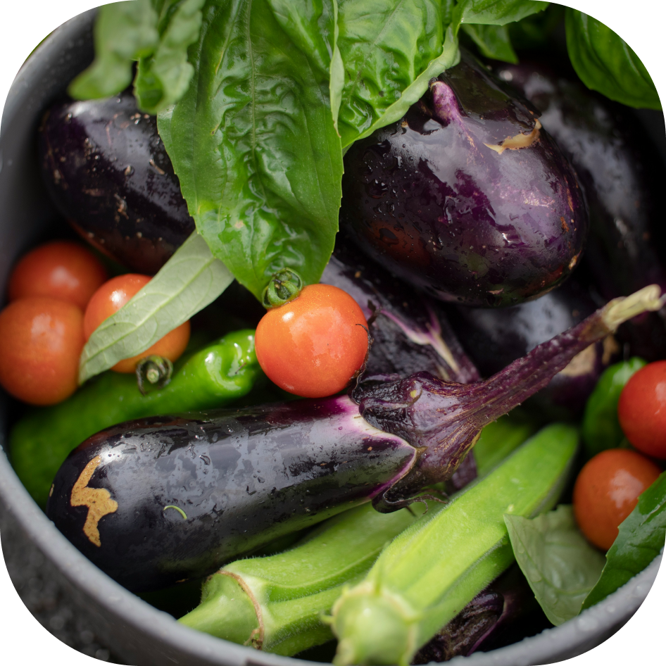
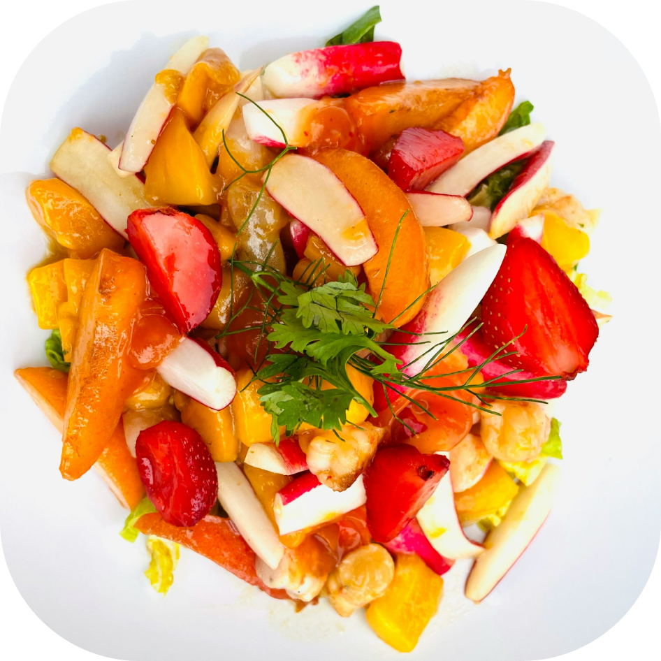
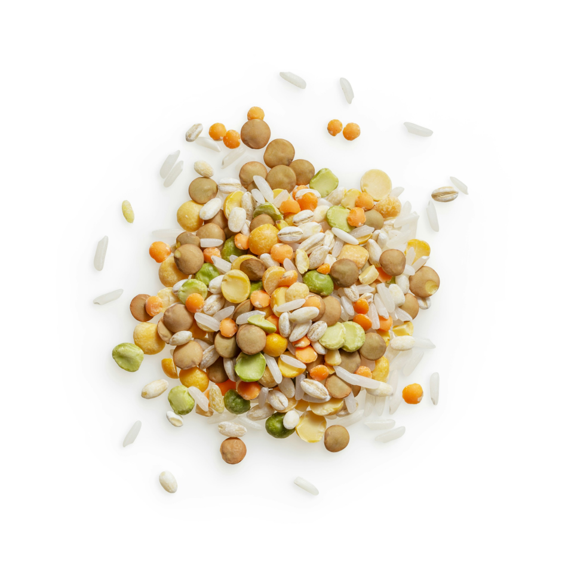

Vegetables
Discover our fresh, seasonal vegetables, handpicked for maximum flavor and nutrition. Perfect for enhancing any meal, these vibrant veggies bring a burst of color and health to your table.

Fruits
Indulge in our selection of orchard-fresh fruits, picked at their peak ripeness. Bursting with flavor and nutrients, these delicious fruits are perfect for snacks, desserts, or adding a sweet touch to your meals.

Seeds
Discover our premium seeds for home gardening. Choose from heirloom and non-GMO varieties to grow fresh vegetables and herbs right in your backyard.